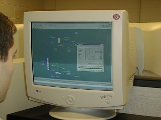

- research -
|  |
Research-in-a-Box - a simple and affordable research tool specifically designed for events and properties. . Sponsorship Research, Sponsorship Evaluation, and Sports Marketing Research from Performance Research Your Link to Premier Sponsorship Marketing Research How effective is sponsorship of sports and special events. Since 1985, Performance Research has been supplying objective answers to this critical question. We're here to provide actionable answers to your sponsorship performance questions, so please feel free to contact us at any time. |
|
By submitting a manuscript, the authors agree that the exclusive rights to reproduce and distribute the article have been given to the publishers. . Performance Research, archives Performance Research Vol. 4 (Winter 2002) 'On Archives and Archiving' CALL FOR CONTRIBUTIONS 'On Archives and Archiving' will be Volume 7, Issue 4 of Performance Research and will be jointly edited by Richard Gough with guest editor Heike Roms. Yet at the same time as performance has asserted its radical ephemerality the demand for documenting and archiving its practices on behalf of performance research and historiography has grown. |
 |
. These teaching faculty are joined by researchers from other departments and colleges to form a broad-based, multidisciplinary team. Research efforts in the process design and improvement area are frequently supported in whole or in part by industry and sometimes involve industrial internships for graduate students. Frequently, one of the products of research into process improvement strategies is computer software in the form of design tools. A large software development project, the Clean Process Advisory System (CPAS), is currently being jointly sponsored by the US EPA and industrial partners. |
|
SURFnet connects the networks of universities, colleges, research centers, academic hospitals and scientific libraries to each other and to other networks in Europe and the rest of the world. . Department of Defense recognized research and engineering network. ESnet - The Energy Sciences Network (ESnet), is a high-speed network serving thousands of U. Department of Energy scientists and collaborators worldwide. |
A good research site: http://www.cheme.cmu.edu/research/capd/